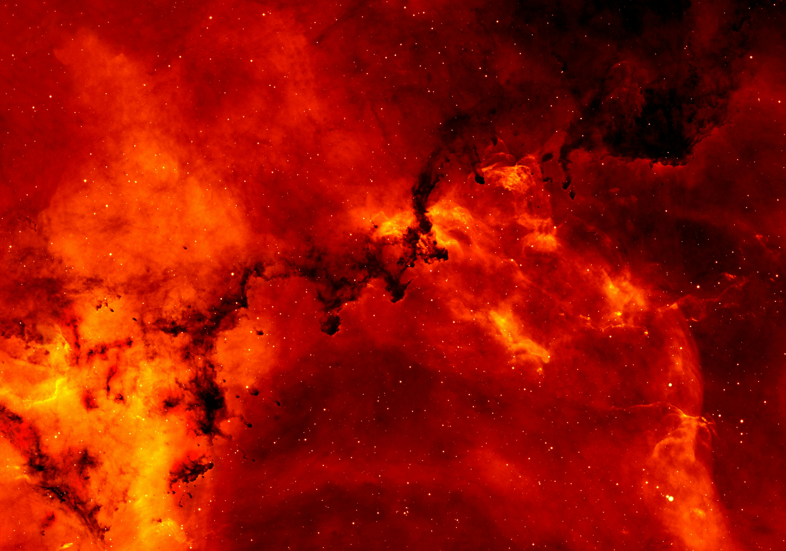

Raiva
A raiva é o grito preso, a tempestade por dentro. É força que pede canalização, fogo que pode transformar. Nesta página, reconhecemos a fúria e o poder que ela carrega, com respeito e escuta.

“Nada em excesso, até mesmo a raiva pode ser combustível.” — Aristóteles
Para Entender a Raiva:
- Livro: O Corpo Guarda as Marcas — Bessel van der Kolk
- Música: Numb — Linkin Park